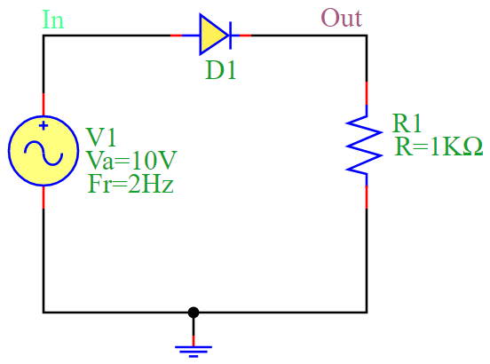
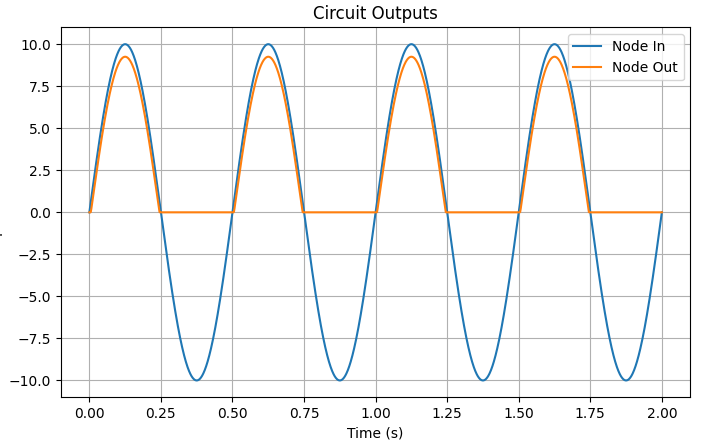

Half-Wave Rectification Circuit
Overview
The half-wave rectification circuit consists of a diode (D1) and a resistor (R1) connected in series with an AC voltage source (V1). The circuit allows only one half-cycle (positive) of the AC voltage to pass while blocking the other half-cycle (negative).
During the positive half-cycle of the input voltage, the diode conducts, allowing current to pass through R1, generating a positive output voltage.
During the negative half-cycle, the diode blocks the current, resulting in zero output voltage.
Mathematical Formulation
The output voltage in a half-wave rectifier is given by:
where:
\(V_m\) is the peak voltage of the AC source.
\(\omega\) is the angular frequency of the AC signal (\(\omega = 2\pi f\)).
\(t\) is the time variable.
Circuit Diagram
The following diagram illustrates the half-wave rectification circuit:
Simulation Code
The following Python script simulates the half-wave rectification circuit using the PyAMS library:
from pyams.lib import circuit
from models import Resistor, SinVoltage, Diode
# Define components
R1 = Resistor("Out", "0")
V1 = SinVoltage("In", "0")
D1 = Diode("In", "Out")
# Set component parameters
R1.setParams("R=1KΩ")
V1.setParams("Va=10V Fr=2Hz")
# Create circuit and add elements
circuit = circuit()
circuit.addElements({"R1": R1, "V1": V1, "D1": D1})
# Set output for plotting
circuit.setOutPuts("In", "Out")
# Perform transient analysis
circuit.analysis(mode="tran", start=0, stop=2, step=0.001)
circuit.run()
circuit.plot()
Simulation Output
The output waveform of the rectifier circuit shows the rectified AC signal, where only the positive half-cycles appear at the output. The simulation produces the following waveform:
Conclusion
The half-wave rectifier is a basic AC-to-DC conversion circuit that allows only one half of the AC waveform to pass. While simple, it is inefficient because it discards half of the input signal. This circuit is useful in low-power applications where a full-wave rectifier is unnecessary.